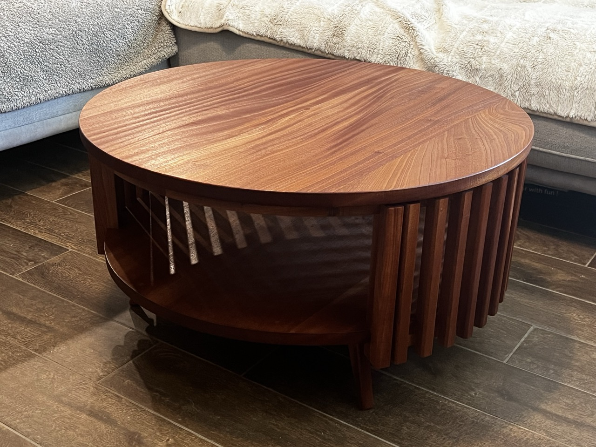
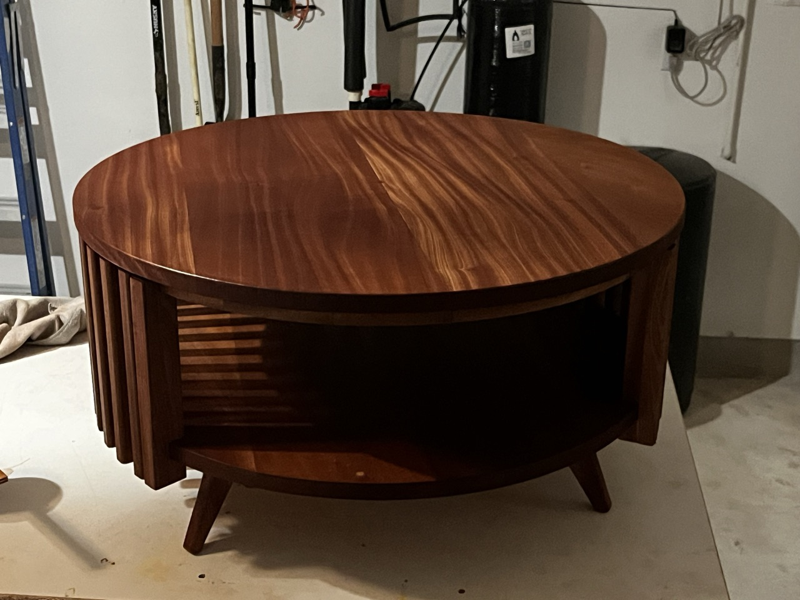

This here is all my work that isn't software. If you want to see software, go look at my regular Github 🙃
This coffee table is my interpretation of one my wife found online. I enjoyed figuring out how to make the little details work... the tiny reveal between the vertical slats and the table top, the understructure, and cutting the perfect circles.
Sapele is a rich, beautiful wood, and I hope to use it for many future projects. The dust is a tad spicy, so don't skip the dust mask when you work with it.


Supporting the table is an angled cross-lap with tapered feet joined in with half-laps.
I chopped these to length and taped them together in groups of 7 to cut the saddle joints on the table saw.
I love how much we can stash under this thing. This was right before the finish went on. I used Seal-a-cell with an Arm-r-seal topcoat. This is piece is puppy-approved!
This space in our house was super bare, but adding this mudroom really gave it some life.
Starting from the ground up, I built the carcass then installed the tongue and groove panels.
Next, I hung the cabinet with a French cleat and threw on a coat of primer. And after that... well, look up above at the result!